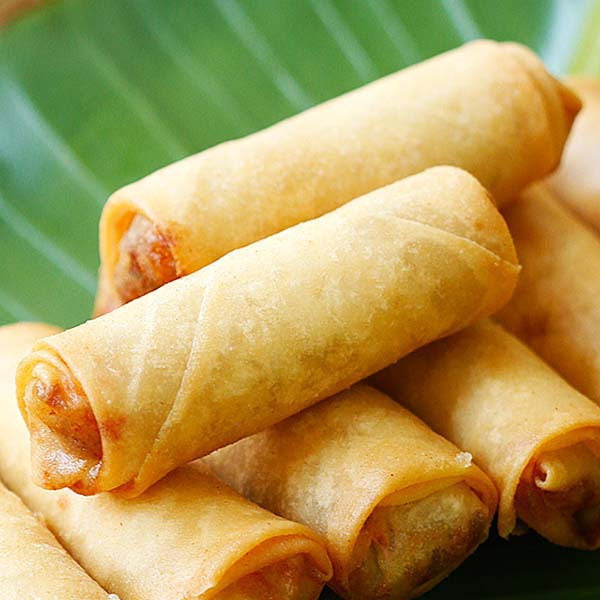

<!DOCTYPE html>
<html lang="en"></html>
<head>
    <meta charset="UTF-8">
    <title>Spring Rolls</title>
</head>
<body>
    <h1>Spring Rolls</h1>
    
    <p><h3><strong><em>Authentic chinese spring rolls</em></strong></h3></p>
    <p>Spring rolls with shreded duck and peanut sauce</p>
    <p>Preperation time: 10 mins</p>
    <p>Cooking time: 15 mins</p>
    <p><h3><strong>Ingredients</strong></h3></p>
    <p><ul>
        <li>Thin rice noodles</li>
        <li>Butter lettuce</li>
        <li>Red cabbage (or green cabbage)</li>
        <li>Carrot</li>
        <li>Cucumber</li>
        <li>Jalapeño (skip if you’re very sensitive to spice)</li>
        <li>Green onion, cilantro and mint</li>
    </ul></p>
</body>
